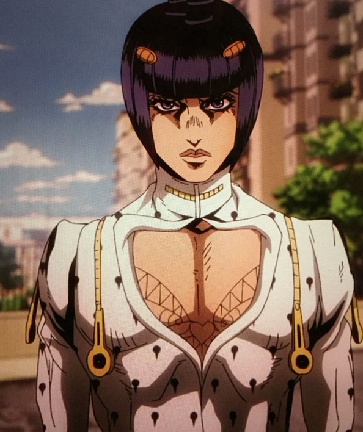

Глава 2 Джорно согласился с Буччилати и прошёл тестирование у Польпо , а позже убив его.Чтобы Буччилати стал Капой. Он стал Капой заполучив заполучив сокровища Польпо.Но Джорно не знал что есть другие обладатели стендов.Например Фанни Валентайн уже приметил сына Дио... Валентайн перенёс Джорно в другую вселенную....
